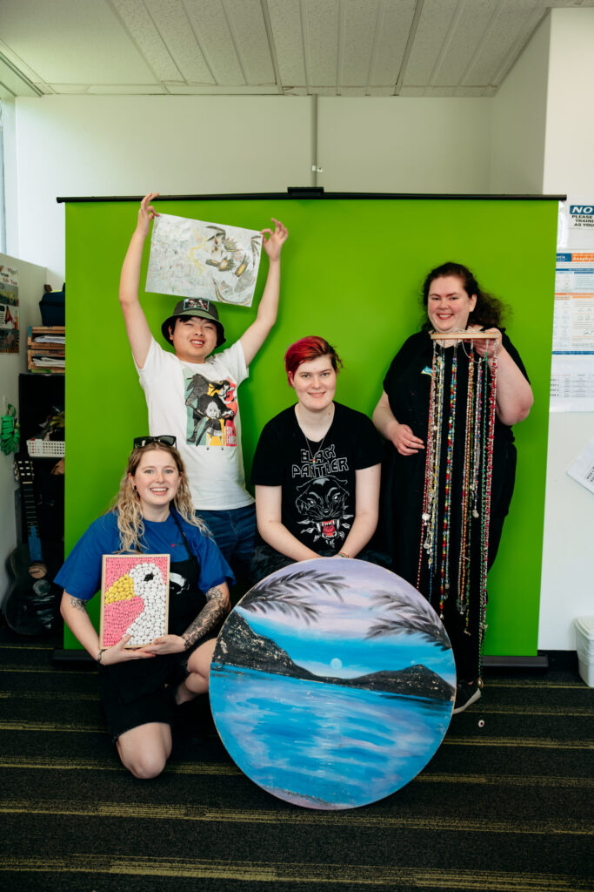
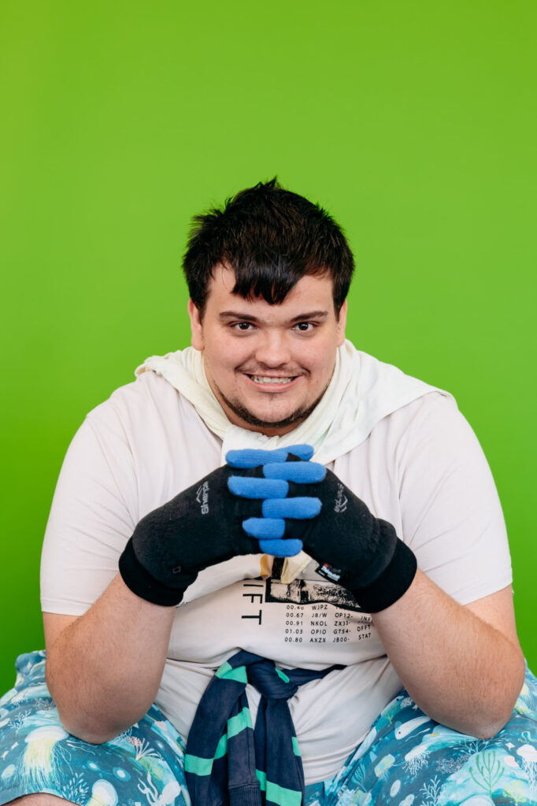
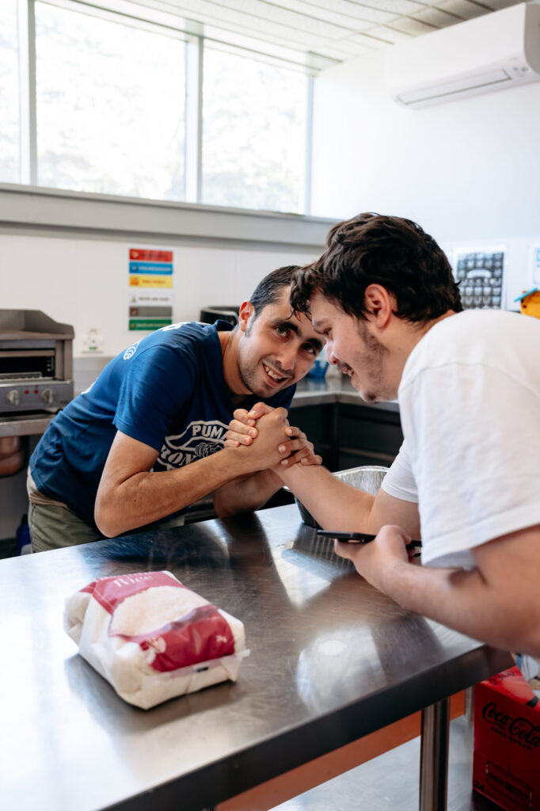

What is Resilience?
Resilience means not giving up, even when things get hard.
It means having a strong mind, that helps you to keep going, even if something is difficult.
No one is born resilient; it is something we learn as we grow.
There are six things that can help us bounce back when life gets hard. They can help us remember the good things in life:
- Positive emotions: Good feelings help us to feel strong, but it is okay to feel sad too.
- Engagement: Do things that make you happy, like playing sports, drawing or cooking.
- Relationships: Spend time with friends and family; good relationships help you feel supported.
- Meaning: Do things that matter to you. This could be helping others or working towards your dream job.
- Accomplishments: Set goals and celebrate when you achieve them.
- Health: Look after your body — sleep, eat, and exercise.


Positive emotions
Positive feelings help us to think better and come up with new ideas as well as stay calm and solve problems.
There is a method called the 3-to-1 rule, which means for one negative feeling, it is important to have three positive ones to stay strong.
To feel more positive, you can practice gratitude — being thankful for all of the good things in your life. By focusing on the good, we can bounce back stronger from challenges.
Perspectives
The way you see things is called perspective. It is shaped by what you have experienced, what you believe in, and how you understand the world.
Your perspective changes depending on how we feel.
For example, if you focus on the bad, you can feel more stressed. But if you see the good and learn from challenges, you become stronger. This thinking can help you grow and be more resilient.

Positive Relationships
When people treat you with kindness and respect, you feel confident and happy.
By having friends and family you trust, it gives you a safe space, making it easier to try new things and learn. Strong relationships help us feel brave and build resilience.
This information has been sourced by Jodie Cooper, 2024.

Inner Strength
Resilience helps you stay calm, keep trying, and believe in yourself.

Personal Growth
Every challenge can teach you something and help you grow stronger.